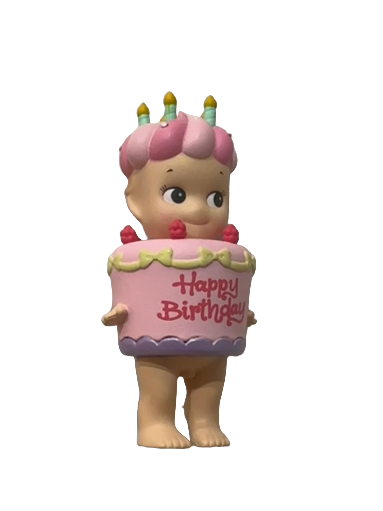
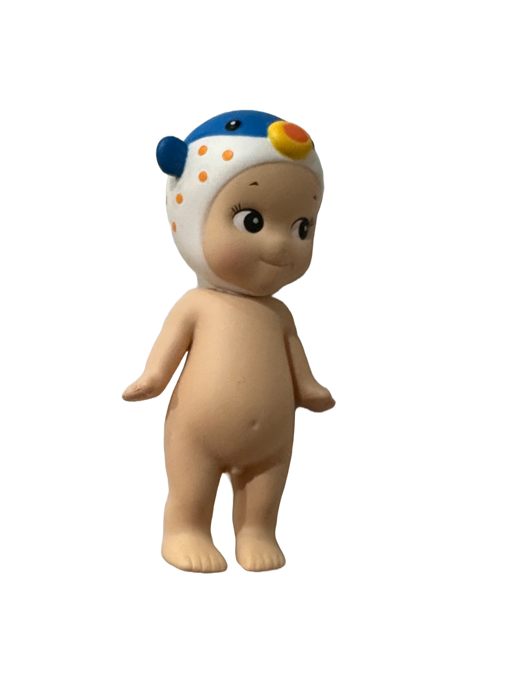
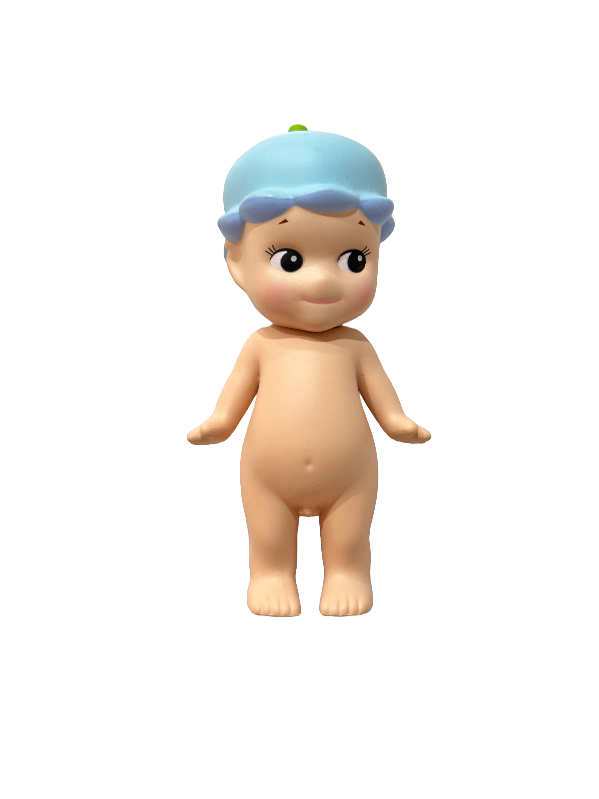
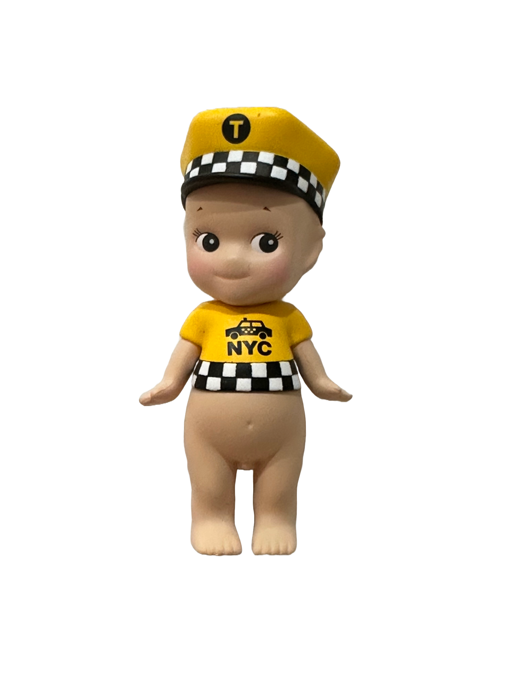
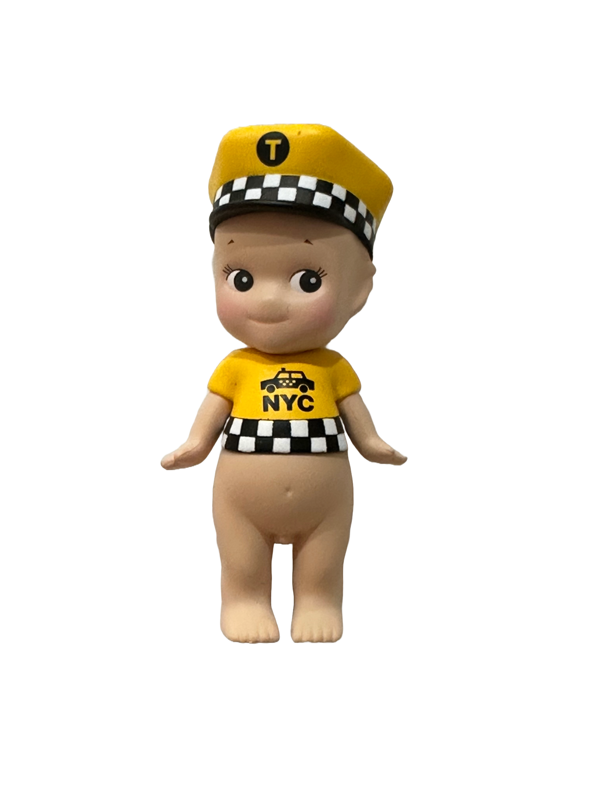
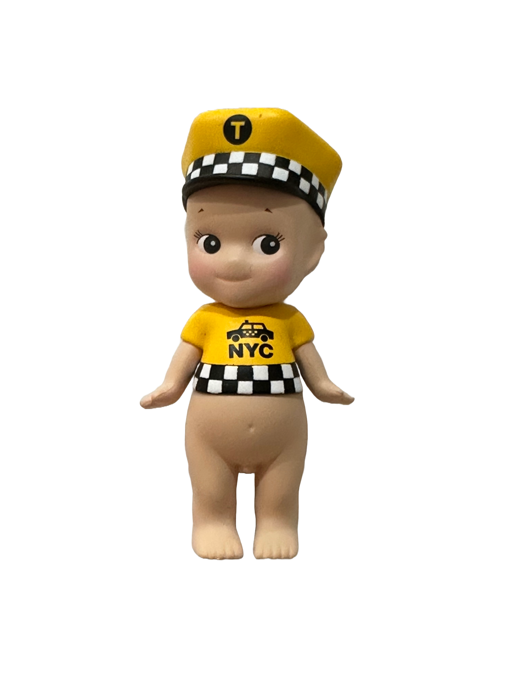

Sonny Angels
Sonny Angel is a little angel boy who likes wearing all sorts of headgear. He is always by your side to make you smile. Sonny Angel will provides healing moments in your everyday life. He is a welcome sight at the entrance to your home, next to your bed, on your desk and so many other places.





 




At the beginning, Sonny Angel was not a mini figure. He was born as a 18cm(7”), wide-eyed doll. Born on May 15th, 2004.
The major feature of Sonny Angel Mini Figures is that each series is comprised of 12 different figures (regular series). Sonny Angel utilizes blind box packaging; you do not know which figure you will receive until you buy one and open the box.